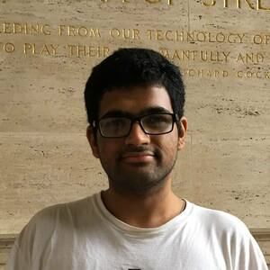

Venkat Arun
- venkatar@mit.edu
- Links
-


I am a sixth year PhD student at CSAIL, MIT. I am on the faculty and industry research job market! I work with Profs. Hari Balakrishnan and Momammad Alizadeh. I did my undergrad from IIT Guwahati. I have worked on:
To overcome weaknesses in traditional loss-based congestion control algorithms (CCAs), over the last ten years researchers have developed and deployed several delay-bounding CCAs that achieve high utilization without bloating delays (e.g., BBR, PCC, Copa). All these CCAs converge to a small delay range in equilibrium when run on a path with a fixed bottleneck rate, achieving high utilization. This paper proves a surprising result: although designed to be cooperative and achieve reasonable fairness, current methods to develop delay-bounding CCAs cannot avoid starvation, an extreme form of unfairness. Starvation occurs when the CCA runs on paths where non-congestive network delay variations due to real-world factors such as ACK aggregation and end-host scheduling exceed double the delay range that the CCA converges to in equilibrium. In addition to proving this result, we use insights from our proof to show empirical scenarios where two flows obtain throughputs that differ by 10× for BBR, PCC Vivace, and Copa. We discuss the implications of this result and posit that to avoid starvation an efficient delay-bounding CCA should design for a certain amount of non-congestive jitter and ensure that its equilibrium delay oscillations are at least one-half of this jitter.
The diversity of paths on the Internet makes it difficult for designers and operators to confidently deploy new congestion control algorithms (CCAs) without extensive real-world experiments, but such capabilities are not available to most of the networking community. And even when they are available, understanding why a CCA under-performs by trawling through massive amounts of statistical data from network connections can be extremely challenging. The history of congestion control is replete with many examples of surprising and unanticipated behaviors when a CCA moves from simulation to prototype implementation to large-scale deployment. The set of possible link and path vagaries is not only numerous, but they compose in complicated ways across links on a path. In this paper, we propose a step toward mitigating these issues. We have developed Congestion Control Anxiety Controller (CCAC), a tool that uses formal verification to establish performance properties of CCAs. It is able to formally prove performance properties of CCAs and generate counter-examples for invalid hypotheses. With CCAC, a designer can not only gain greater confidence prior to deployment to avoid unpleasant surprises, but can also use the counter-examples to iteratively improve their algorithm. We model AIMD, Copa, and BBR with CCAC, and report on some surprising results from the exercise.
This paper introduces Copa, an end-to-end congestion control algorithm that uses three ideas. First, it shows that a target rate equal to 1/(δ dq), where dq is the (measured) queueing delay, optimizes a natural function of throughput and delay under a Markovian packet arrival model. Second, it adjusts its congestion window in the direction of this target rate, converging quickly to the correct fair rates even in the face of significant flow churn. These two ideas enable a group of Copa flows to maintain high utilization with low queuing delay. However, when the bottleneck is shared with loss-based congestion-controlled flows that fill up buffers, Copa, like other delay-sensitive schemes, achieves low throughput. To combat this problem, Copa uses a third idea: detect the presence of buffer-fillers by observing the delay evolution, and respond with additive-increase/multiplicative decrease on the δ parameter. Experimental results show that Copa outperforms Cubic (similar throughput, much lower delay, fairer with diverse RTTs), BBR and PCC (significantly fairer, lower delay), and co-exists well with Cubic unlike BBR and PCC. Copa is also robust to non-congestive loss and large bottleneck buffers, and outperforms other schemes on long-RTT paths.
To reduce transmit power, increase throughput, and improve range, radio systems benefit from the ability to direct more of the transmitted power toward the intended receiver. Many modern systems beamform with antenna arrays for this purpose. However, a radio's ability to direct its signal is fundamentally limited by its size. Because radios on IoT and mobile devices must be small and inexpensive, they do not benefit from beamforming.
To address this problem, we introduce RFocus, which moves beamforming functions from the radio endpoints to the environment. RFocus includes a two-dimensional surface with a rectangular array of simple RF switch elements. Each switch element either lets the signal through or reflects it. The surface does not emit any power of its own. The state of the elements is set by a software controller to maximize the signal strength at a receiver, with a novel optimization algorithm that uses signal strength measurements from the receiver. The RFocus surface can be manufactured as an inexpensive thin "wallpaper", requiring no wiring. Our prototype implementation improves the median signal strength by 9.5×, and the median channel capacity by 2.0× inside an office building.
For fear of retribution, the victim of a crime may be willing to report it only if other victims of the same perpetrator also step forward. Common examples include 1) identifying oneself as the victim of sexual harassment, especially by a person in a position of authority or 2) accusing an influential politician, an authoritarian government or ones own employer of corruption. To handle such situations, legal literature has proposed the concept of an allegation escrow: a neutral third-party that collects allegations anonymously, matches them against each other, and de-anonymizes allegers only after de-anonymity thresholds (in terms of number of co-allegers), pre-specified by the allegers, are reached.
An allegation escrow can be realized as a single trusted third party; however, this party must be trusted to keep the identity of the alleger and content of the allegation private. To address this problem, this paper introduces Secure Allegation Escrows (SAE, pronounced "say"). A SAE is a group of parties with independent interests and motives, acting jointly as an escrow for collecting allegations from individuals, matching the allegations, and de-anonymizing the allegations when designated thresholds are reached. By design, SAEs provide a very strong property: No less than a majority of parties constituting a SAE can de-anonymize or disclose the content of an allegation without a sufficient number of matching allegations (even in collusion with any number of other allegers). Once a sufficient number of matching allegations exist, all parties can simultaneously disclose the allegation with a verifiable proof of the allegers' identities. We describe how SAEs can be constructed using a novel authentication protocol and a novel allegation matching and bucketing algorithm, provide formal proofs of the security of our constructions, and provide an evaluation of a prototype implementation, demonstrating feasibility in practice.
Network performance monitoring today is restricted by existing switch support for measurement, forcing operators to rely heavily on endpoints with poor visibility into the network core. Switch vendors have added progressively more monitoring features to switches, but the current trajectory of adding specific features is unsustainable given the ever-changing demands of network operators. Instead, we ask what switch hardware primitives are required to support an expressive language of network performance questions. We believe that the resulting switch hardware design could address a wide variety of current and future performance monitoring needs.
We present a performance query language, Marple, modeled on familiar functional constructs like map, filter, groupby, and zip. Marple is backed by a new programmable key-value store primitive on switch hardware. The key-value store performs flexible aggregations at line rate (e.g., a moving average of queueing latencies per flow), and scales to millions of keys. We present a Marple compiler that targets a P4-programmable software switch and a simulator for high- speed programmable switches. Marple can express switch queries that could previously run only on end hosts, while Marple queries only occupy a modest fraction of a switch’s hardware resources.
Analytics on video recorded by cameras in public areas have the potential to fuel many exciting applications, but also pose the risk of intruding on individuals' privacy. Unfortunately, existing solutions fail to practically resolve this tension between utility and privacy, relying on perfect detection of all private information in each video frame--an elusive requirement. This paper presents: (1) a new notion of differential privacy (DP) for video analytics, (ρ, K, ε)-event-duration privacy, which protects all private information visible for less than a particular duration, rather than relying on perfect detections of that information, and (2) a practical system called Privid that enforces duration-based privacy even with the (untrusted) analyst-provided deep neural networks that are commonplace for video analytics today. Across a variety of videos and queries, we show that Privid achieves accuracies within 79-99% of a non-private system.
This paper studies the problem of allocating tasks from differentcustomers to vehicles in mobility platforms, which are used for ap-plications like food and package delivery, ridesharing, and mobile sensing. A mobility platform should allocate tasks to vehicles and schedule them in order to optimize both throughput and fairness across customers. However, existing approaches to scheduling tasks in mobility platforms ignore fairness.
We introduce Mobius, a system that uses guided optimization to achieve both high throughput and fairness across customers. Mobius supports spatiotemporally diverse and dynamic customer demands. It provides a principled method to navigate inherent tradeoffs between fairness and throughput caused by shared mobility. Our evaluation demonstrates these properties, along with the versatility and scalability of Mobius, using traces gathered from ridesharing and aerial sensing applications. Our ridesharing case study shows that Mobius can schedule more than 16,000 tasks across 40 customers and 200 vehicles in an online manner.